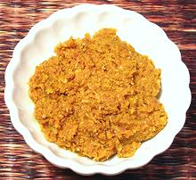

 |
Yellow Curry PasteThailand - Krueng Gaeng Kah-ree | ||||
| Makes: Effort: Sched: DoAhead: |
6 oz *** 45 min Total |
This is the mildest of the Thai curries. Actually a Thai interpretation of the curries of southern India, and probably similar to how curry was made in India before dried spices came into general use there. | |||
|
|
2 2 3 1 3 1/2 10 2 1 2 |
t T T t in cl oz t t |
Cumin Seeds Coriander Seeds Thai Chili dried (1) Turmeric Lemon Grass (2) Ginger Garlic Shallots Shrimp Paste (3) Salt |
This recipe is traditionally made by pounding in a big stone mortar, but I find a mini-prep food processor helps cut down on pounding time. See Note-4 for details. If you don't have the Big Stone Mortar (so why don't you?) you'll have to settle for a somewhat more grainy paste.
|